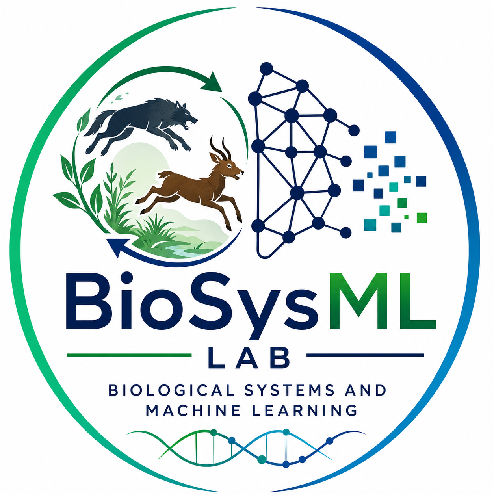

BioSysML Lab focuses on mathematical biology, nonlinear dynamics, computational neuroscience, ecological systems, AI-driven simulations, and scientific machine learning for understanding complex living systems.
BioSysML Lab integrates mathematics, biology, artificial intelligence, and scientific computing to study complex biological and ecological systems. Our work combines theory, simulations, and data-driven approaches.
To develop innovative mathematical and AI-based frameworks for understanding complex biological phenomena and advancing interdisciplinary research.
To bridge mathematical modelling, computation, and machine learning for impactful scientific discoveries in biological systems.
We combine nonlinear dynamics, high-performance computing, deep learning, and data-driven modelling for predictive and interpretable biological analysis.
Dynamical systems, PDEs, pattern formation.
PINNs, Deep Learning, Scientific AI.
GPU computing, simulations, numerical methods.